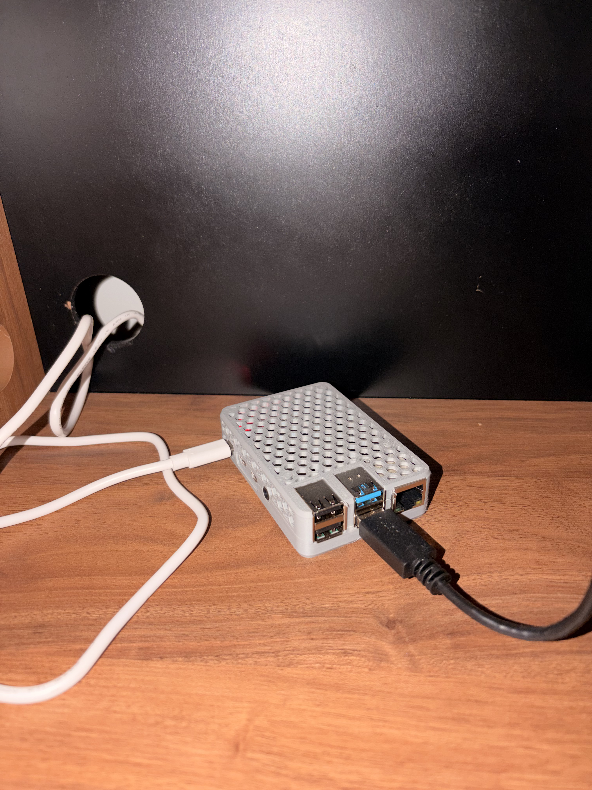

I turn complex business problems into products people can actually use.
Product Manager / Product Owner with experience across digital products, operations, and international markets. I connect business goals, customer needs, and technical execution to help teams focus on the problems worth solving.
A product portfolio should show how I think, what I chose to do, and what changed—not just what tools I used.
CASE STUDIES / 01—02
PRODUCT · INTERNATIONAL MARKETSCASE 01
Scaling digital products across markets
Working across markets means balancing a consistent product direction with local customer needs, operational realities, and stakeholder priorities.
The challenge
Align business goals, local-market needs, and operational constraints without losing focus on the customer or the outcomes the product must deliver.
Product approach
Frame the problem, make trade-offs explicit, align cross-functional stakeholders, and translate priorities into an executable plan.
What this demonstrates
Product judgment at the intersection of customer experience, business priorities, and operational execution.
Professional experience: Localiza&Co. Specific initiatives and performance figures can be shared where appropriate and non-confidential.
OPERATIONS · DIGITAL ENABLEMENTCASE 02
Turning operational complexity into scalable workflows
Complex operations often hide product opportunities: unclear handoffs, repeated manual work, fragmented information, or processes that become harder to scale as the business grows.
The challenge
Find the underlying bottleneck instead of treating every symptom as a separate request or feature.
Product approach
Map the workflow, identify the highest-value friction, prioritize an intervention, and coordinate the people needed to deliver and adopt it.
What this demonstrates
Systems thinking, pragmatic prioritization, and a focus on measurable operational outcomes.
This is a case-study frame for relevant work. Replace the generalized narrative with one specific initiative, your contribution, and verified results before publishing as a completed case.
The case narratives above intentionally avoid invented KPIs or confidential details. For the strongest final version, replace generalized descriptions with one real initiative, your specific decisions, and verified outcomes.
BUILD / TEST / LEARN
Technical lab
Side projects that show how I explore constraints, prototype ideas, and build a practical understanding of technology.
SYSTEMS / EXPERIMENTS

CLOUDIO / SELF-HOSTED
RUNNING SERVICESRaspberry Pi 4 · 8 GB
DockerServices
OMVStorage
VPNRemote access
SELF-HOSTED SYSTEMSAI & AUTOMATION
Cloudio // Personal infrastructure
A self-hosted environment built around a Raspberry Pi 4 (8 GB RAM), bringing together private photo management, media services, network-level filtering, remote access, and AI-agent experiments.
Design decisions
Containerize services, organize persistent data on external storage, and balance capability against limited CPU, memory, and boot-disk capacity.
Product relevance
A hands-on exercise in prioritization, reliability trade-offs, user privacy, maintenance cost, and designing around real constraints.
From natural-language requirements to physical prototypes
An experimental workflow that turns part requirements into parametric OpenSCAD models, then validates the design through physical prototyping on a Bambu Lab A1 Mini. The interesting part is not generating code alone—it is translating constraints into something that fits and works.
1. Specify
Dimensions, clearances, fit, and functional constraints.
2. Generate
Parametric geometry and editable OpenSCAD code.
3. Validate
Print, test fit, learn, and refine the design.
REQUIREMENT → PROTOTYPEITERATIVE LOOP
Natural-language brief
User need + constraints
AI-assisted model
Parametric OpenSCAD
Physical test
Fit, function, iteration
A practical example of rapid prototyping, feedback loops, and learning through validation.
BEYOND THE TITLE
A product mindset with a builder’s curiosity.
I enjoy working where business goals meet messy operational reality. My approach is to make the problem explicit, understand the constraints, bring the right people into the decision, and keep delivery connected to the outcome. Building systems outside work keeps my technical judgment grounded: I see the cost of complexity, maintenance, and unclear requirements firsthand.
Outcome-oriented
Connect priorities to customer value and business goals—not output for its own sake.
Cross-functional
Translate between business, operations, design, and engineering.
Pragmatic prioritization
Make trade-offs visible and focus effort where it can create the most value.
Experiment and learn
Use prototypes and feedback to reduce uncertainty before over-investing.
LET’S TALK
Have a product problem worth solving?
I’m interested in product roles where customer needs, business outcomes, and technical execution come together.